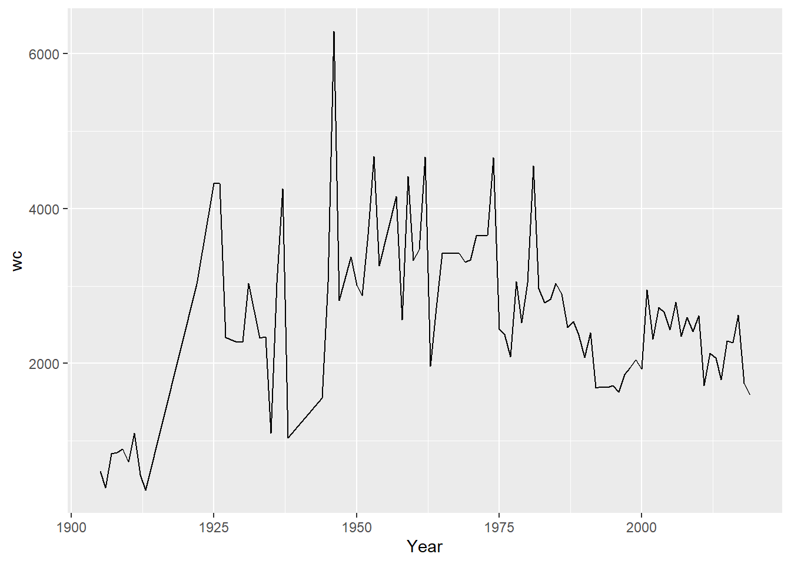
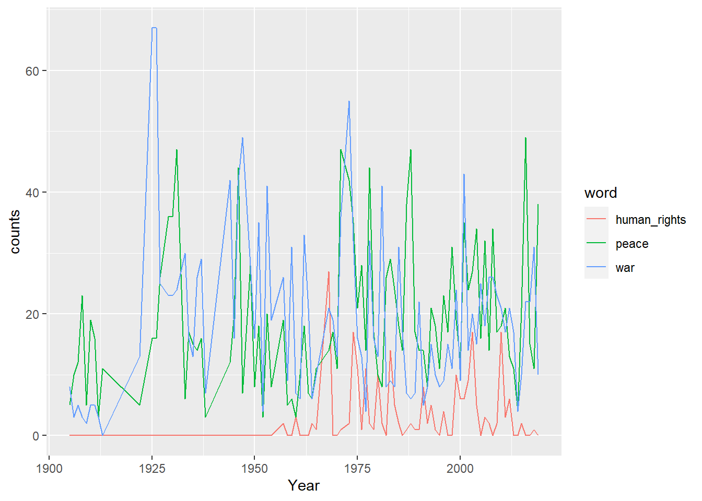

As we’ve seen already, almost always when documents in the real world are read into R they are highly imperfect. They will have all kinds of crazy tags, whitespaces (which also show up as tags under some viewing methods), and other things we may want to strip. In fact, in the real world collecting and cleaning data generally takes at least as long as analysis. A fairly balanced workshop on text analysis would probably rightly spend at least half of its time on these issues and less on analytics. We’ll get on to analytics in the next section but it’s important to realize that these initial ones are just as important, even if they seem a little dull and uninspiring.
We’ll use two sample corpora as examples and test corpora for the rest of the workshop. The first is Nobel Peace Prize award ceremony speeches since 1905. They are scraped from https://www.nobelprize.org using the slightly more advanced methods than we’ll discuss here. For code and brief discussion, see the Appendix. The second is a corpus of Sustainability Reports for several major international oil companies.
library(tidyverse)
nobel <- read_csv("data/NobelPeace.csv", locale=locale(encoding = "latin1")) %>%
select(!X1)## Warning: Missing column names filled in: 'X1' [1]sr <- read_csv("data/srps.csv")So after the first two sessions we’re assuming we have our corpus in a tibble, with one column being the text of the documents and other columns of metadata – year and company for the Social Responsibility reports, laureate and year for our Nobel Peace Prize award speeches. First things first, there are numerous ways to try to get an overview of the data. If you just enter the dataframe’s name in R you will get the first few lines. Alternately, you can use print() – tibbles are build to make printing and viewing dataframes easier. If we want to print all rows (you have to be careful with this, if you have millions of rows this will probably crash R) we can do this.
nobel # note that this tells you the datatype of each column## # A tibble: 92 x 3
## Year Laureate AwardSpeech
## <dbl> <chr> <chr>
## 1 1905 Bertha von Suttner " On behalf ~
## 2 1906 Theodore Roosevelt "As the Nobel~
## 3 1907 Ernesto Teodoro Moneta, Louis Renault "Ernesto Teod~
## 4 1908 Klas Pontus Arnoldson, Fredrik Bajer "On behalf of~
## 5 1909 Auguste Beernaert, Paul Henri d'Estournelles de Constant "Auguste Beer~
## 6 1910 Permanent International Peace Bureau "Chairman of ~
## 7 1911 Tobias Asser, Alfred Fried "Tobias Micha~
## 8 1912 Elihu Root "Elihu Root w~
## 9 1913 Henri La Fontaine "Henri La Fon~
## 10 1922 Fridtjof Nansen "I take pleas~
## # ... with 82 more rowsprint(nobel, n = Inf)## # A tibble: 92 x 3
## Year Laureate AwardSpeech
## <dbl> <chr> <chr>
## 1 1905 Bertha von Suttner " On behalf of the Nobel Committee,~
## 2 1906 Theodore Roosevelt "As the Nobel Committee meets toda~
## 3 1907 Ernesto Teodoro Moneta, Louis Re~ "Ernesto Teodoro Moneta was born in ~
## 4 1908 Klas Pontus Arnoldson, Fredrik B~ "On behalf of the Nobel Committee of~
## 5 1909 Auguste Beernaert, Paul Henri d'~ "Auguste Beernaert was born in 18281~
## 6 1910 Permanent International Peace Bu~ "Chairman of the Committee Løvland t~
## 7 1911 Tobias Asser, Alfred Fried "Tobias Michael Carel Asser was born~
## 8 1912 Elihu Root "Elihu Root was born on February 15,~
## 9 1913 Henri La Fontaine "Henri La Fontaine is the true leade~
## 10 1922 Fridtjof Nansen "I take pleasure in announcing that ~
## 11 1925 Sir Austen Chamberlain, Charles ~ "We still remember it vividly, that ~
## 12 1926 Aristide Briand, Gustav Stresema~ "We still remember it vividly, that ~
## 13 1927 Ferdinand Buisson, Ludwig Quidde "The Nobel Committee has awarded the~
## 14 1929 Frank B. Kellogg " It might appear that this year\u0~
## 15 1930 Nathan Söderblom " It might appear that this year\u0~
## 16 1931 Jane Addams, Nicholas Murray But~ "In awarding the Peace Prize to two ~
## 17 1933 Sir Norman Angell "In the work for international peace~
## 18 1934 Arthur Henderson "It is not my task today to present ~
## 19 1935 Carl von Ossietzky "Carl von Ossietzky, who has been aw~
## 20 1936 Carlos Saavedra Lamas "The Nobel Peace Prize for 1936 has ~
## 21 1937 Robert Cecil "Three statesmen who occupied leadin~
## 22 1938 Nansen International Office for ~ "This year, as we all know, the Nobe~
## 23 1944 International Committee of the R~ " Six years have passed since we la~
## 24 1945 Cordell Hull "Cordell Hull has devoted his entire~
## 25 1946 Emily Greene Balch, John R. Mott "The environment in which a child is~
## 26 1947 Friends Service Council, America~ " The Nobel Committee of the Norweg~
## 27 1949 Lord Boyd Orr "Lord Boyd Orr occupies a unique pla~
## 28 1950 Ralph Bunche " Dr. Ralph Bunche was born forty-s~
## 29 1951 Léon Jouhaux "Alfred Nobel\u0092s Peace Prize is ~
## 30 1952 Albert Schweitzer "Albert Schweitzer was born in Alsac~
## 31 1953 George C. Marshall "When Cadet First Captain George Cat~
## 32 1954 Office of the United Nations Hig~ " The Nobel Committee of the Norweg~
## 33 1957 Lester Bowles Pearson "The Nobel Committee of the Norwegia~
## 34 1958 Georges Pire " The Nobel Committee of the Norweg~
## 35 1959 Philip Noel-Baker "Frequently when the storm clouds ga~
## 36 1960 Albert Lutuli " This year the Nobel Committee of ~
## 37 1961 Dag Hammarskjöld "The Nobel Committee of the Norweg~
## 38 1962 Linus Pauling "Shortly after the atomic bombs were~
## 39 1963 International Committee of the R~ "The Nobel Committee of the Norweg~
## 40 1964 Martin Luther King Jr. " Not many years have passed since ~
## 41 1965 United Nations Children's Fund "The death of Alfred Nobel at San Re~
## 42 1968 René Cassin "The last time the Nobel Peace Prize~
## 43 1969 International Labour Organization "When Alfred Nobel died on December ~
## 44 1970 Norman Borlaug "In the will and testament drawn up ~
## 45 1971 Willy Brandt " The 1971 Nobel Peace Prize was aw~
## 46 1973 Henry Kissinger, Le Duc Tho "Your Majesty, Your Royal Highnesses~
## 47 1974 Seán MacBride, Eisaku Sato "Your Majesty, Your Royal Highnesses~
## 48 1975 Andrei Sakharov "Translation Your Majesty, Your Roya~
## 49 1976 Betty Williams, Mairead Corrigan "Translation Your Majesty, Your Roya~
## 50 1977 Amnesty International "Translation Your Majesty, Your Roya~
## 51 1978 Anwar al-Sadat, Menachem Begin "Translation Your Majesty, Your Roya~
## 52 1979 Mother Teresa "Translation Your Majesty, Your Roya~
## 53 1980 Adolfo Pérez Esquivel "Translation Your Majesty, Your Roya~
## 54 1981 Office of the United Nations Hig~ "Your Majesty, Your Royal Highnesses~
## 55 1982 Alva Myrdal, Alfonso García Robl~ "Translation Your Majesty, Your Roya~
## 56 1983 Lech Walesa "Your Majesty, Your Royal Highnesses~
## 57 1984 Desmond Tutu "Your Majesty, Your Royal Highnesses~
## 58 1985 International Physicians for the~ "Your Majesty, Your Royal Highnesses~
## 59 1986 Elie Wiesel "Your Majesty, Your Royal Highnesses~
## 60 1987 Oscar Arias Sánchez "Your Majesty, Your Royal Highnesses~
## 61 1988 United Nations Peacekeeping Forc~ "Your Majesty, Your Royal Highnesses~
## 62 1989 The 14th Dalai Lama "The Nobel Peace Prize is one of six~
## 63 1990 Mikhail Gorbachev "Your Royal Highnesses, Your Excelle~
## 64 1991 Aung San Suu Kyi "Your Majesties, Your Excellencies, ~
## 65 1992 Rigoberta Menchú Tum "Your Majesties, Your Excellencies, ~
## 66 1993 Nelson Mandela, F.W. de Klerk "Your Majesties, Excellencies, Ladie~
## 67 1994 Yasser Arafat, Shimon Peres, Yit~ "Your Majesties, Your Excellencies, ~
## 68 1995 Joseph Rotblat, Pugwash Conferen~ "Your Majesties, Your Excellencies, ~
## 69 1996 Carlos Filipe Ximenes Belo, José~ "Translation of the Norwegian text Y~
## 70 1997 International Campaign to Ban La~ "Translation of the Norwegian text. ~
## 71 1998 John Hume, David Trimble "Translation of the Norwegian text. ~
## 72 1999 Médecins Sans Frontières "Translation of the Norwegian text. ~
## 73 2000 Kim Dae-jung " Translation of the Norwegian text~
## 74 2001 United Nations, Kofi Annan " Translation of the Norwegian text~
## 75 2002 Jimmy Carter "Translation of the Norwegian text. ~
## 76 2003 Shirin Ebadi "Translation of the Norwegian text. ~
## 77 2004 Wangari Maathai "English Norwegian Your Majesties, Y~
## 78 2005 International Atomic Energy Agen~ "Your Majesties, Your Royal Highness~
## 79 2006 Muhammad Yunus, Grameen Bank "Your Majesties, Your Royal Highness~
## 80 2007 Intergovernmental Panel on Clima~ "Norwegian Your Majesties, Your Roy~
## 81 2008 Martti Ahtisaari "Norwegian Your Majesties, Your Roy~
## 82 2009 Barack H. Obama "© THE NOBEL FOUNDATION 2009\r\nGene~
## 83 2010 Liu Xiaobo "Your Majesties, Excellencies, Ladie~
## 84 2011 Ellen Johnson Sirleaf, Leymah Gb~ "Your Majesties, Your Royal Highness~
## 85 2012 European Union (EU) "Your Majesties, Your Royal Highness~
## 86 2013 Organisation for the Prohibition~ "Your Majesties, Your Royal Highness~
## 87 2014 Kailash Satyarthi, Malala Yousaf~ "NorwegianEnglish © THE NOBEL FOUNDA~
## 88 2015 National Dialogue Quartet "Your Majesties, Your Royal Highness~
## 89 2016 Juan Manuel Santos "NorwegianEnglishSpanish Berit Reiss~
## 90 2017 International Campaign to Abolis~ "NorwegianEnglish © THE NOBEL FOUNDA~
## 91 2018 Denis Mukwege, Nadia Murad "NorwegianEnglishFrenchArabic (pdf) ~
## 92 2019 Abiy Ahmed Ali "Your Majesties, Your Royal Highness~Other options are glimpse() (tidyverse) and str() (baseR) that give you different ways to visualize a bit. Often the easiest is to ask R to open a separate window with View(). Finally, sometimes if you have a long character string the easiest way to inspect it is simply to print it out separately. Using the cat() command will format using the formatting tags in the text – it will look nicer but you might want to know where the /n and /t tags (newline and tab markers) are.
#View(nobel) # opens a new window
nobel$AwardSpeech[4] # will show the fourth line of the text column of the nobel dataframe## [1] "On behalf of the Nobel Committee of the Norwegian Parliament, I have the honor to extend a welcome to all who have assembled here on this occasion commemorating the great Swedish patron and benefactor, Alfred Nobel, who gave the whole of his large fortune to the solution of problems concerning the future fate of mankind. Since we last met here, one of the winners of the Peace Prize, Randal Cremer, has left us forever1; but he has left behind the memory of a great personality and of a warm friend of peace and of mankind. I invite you all to honor his memory by standing. This year the Nobel Committee has unanimously decided to divide the Peace Prize between former member of the Swedish Parliament, K.P. Arnoldson, and former member of the Danish Parliament, Fredrik Bajer. It is a great pleasure for the Committee to award the prize to these gentlemen, since it is convinced that its choice accords with the general desire in the Scandinavian countries. They have both been untiring advocates of the ideals of peace. K.P. Arnoldson was born in Gothenburg in 1844 and in his youth was in the service of the Swedish Railways. At the same time, however, he also worked for the press as a journalist and author, one of his favorite subjects even then being the cause of peace. From 1882 to 1887 Arnoldson was a member of the Lower House of the Swedish Parliament; In 1883 he put forward a proposal for an address to the king, petitioning for a declaration of permanent neutrality by Sweden. The proposal was not adopted, but the House recommended that the government should continue to work along the lines of the proposal. In the same year Arnoldson helped to found the Swedish Peace and Arbitration Association [Svenska freds-och skiljedomsföreningen], which recently celebrated its twenty-fifth anniversary. Arnoldson was secretary of the association for the first few years and edited its paper. Arnoldson<U+0092>s work also extended to Norway. The success of his speeches in several of our cities in 1889 and 1890 indirectly encouraged Parliament in 1890 to adopt his arbitration address to the king. Arnoldson has published a number of important works on peace, several of which have been translated into other languages. His most important is The Hope of the Centuries: A Book on World Peace, an account of the growth of the idea of peace among nations and in international relations. Mr. Arnoldson, along with Mr. Fredrik Bajer, was nominated for the Nobel Peace Prize this year with the unanimous support of the Swedish Interparliamentary Group and a number of Norwegian members of Parliament. * * * Fredrik Bajer was born in 1837. Like Tolstoy and many other fighters for peace, he began his career as an officer and from 1856 to 1865 was a lieutenant of Dragoons. He then began his study of foreign languages, becoming an elementary school teacher and later a translator. Already in the 1860<U+0092>s he was maintaining contact with the peace movement and was in touch with Frédéric Passy, who in 1867 founded the first French peace society1. From 1872 to 1895, Bajer was a member of Parliament for Horsens and during that time did much work for the cause of peace and for women<U+0092>s rights. Mr. Bajer has been an extraordinarily prolific writer, and in his many articles and pamphlets about and in favor of the cause of peace, he has dealt with practically all the problems involved in the peace movement. Norwegian newspapers have also enjoyed the benefit of his able pen. Special mention should be made of his great study of the question of neutrality. In 1882 he was also responsible for the foundation of a peace society in Denmark, at first called the Society for the Promotion of Danish Neutrality and later the Danish Peace Society2. At a very early date Mr. Bajer took an active part in the European peace movement. In 1884 he participated in the International Congress in Bern and in 1889 he took part both in the International Congress and in the Interparliamentary Conference, held during the Great Exhibition in Paris; since then there have been few of these meetings in which he has not participated. It was at his instigation and suggestion that in 1891 a permanent International Peace Bureau was established in Bern. Bajer was president of its Board of Administration until last year when he declined reelection and was instead named honorary president. Since 1891 Bajer has also had a seat on the council which controls the Interparliamentary Union. He has always shown a great interest in cooperation between the Nordic countries in the cause of peace. He has invariably taken part in the Nordic peace meetings, and it is mainly due to his efforts that a Nordic Interparliamentary Union has been founded3. Fredrik Bajer was nominated this year as a candidate for the Nobel Peace Prize by the Danish Interparliamentary Group, among others, and, together with K.P. Arnoldson, by the Swedish Interparliamentary Group and a number of members of the Norwegian Parliament."cat(nobel$AwardSpeech[4]) # nicer formatting but now you're not seeing formatting tags in the text## On behalf of the Nobel Committee of the Norwegian Parliament, I have the honor to extend a welcome to all who have assembled here on this occasion commemorating the great Swedish patron and benefactor, Alfred Nobel, who gave the whole of his large fortune to the solution of problems concerning the future fate of mankind. Since we last met here, one of the winners of the Peace Prize, Randal Cremer, has left us forever1; but he has left behind the memory of a great personality and of a warm friend of peace and of mankind. I invite you all to honor his memory by standing. This year the Nobel Committee has unanimously decided to divide the Peace Prize between former member of the Swedish Parliament, K.P. Arnoldson, and former member of the Danish Parliament, Fredrik Bajer. It is a great pleasure for the Committee to award the prize to these gentlemen, since it is convinced that its choice accords with the general desire in the Scandinavian countries. They have both been untiring advocates of the ideals of peace. K.P. Arnoldson was born in Gothenburg in 1844 and in his youth was in the service of the Swedish Railways. At the same time, however, he also worked for the press as a journalist and author, one of his favorite subjects even then being the cause of peace. From 1882 to 1887 Arnoldson was a member of the Lower House of the Swedish Parliament; In 1883 he put forward a proposal for an address to the king, petitioning for a declaration of permanent neutrality by Sweden. The proposal was not adopted, but the House recommended that the government should continue to work along the lines of the proposal. In the same year Arnoldson helped to found the Swedish Peace and Arbitration Association [Svenska freds-och skiljedomsföreningen], which recently celebrated its twenty-fifth anniversary. Arnoldson was secretary of the association for the first few years and edited its paper. Arnoldson<U+0092>s work also extended to Norway. The success of his speeches in several of our cities in 1889 and 1890 indirectly encouraged Parliament in 1890 to adopt his arbitration address to the king. Arnoldson has published a number of important works on peace, several of which have been translated into other languages. His most important is The Hope of the Centuries: A Book on World Peace, an account of the growth of the idea of peace among nations and in international relations. Mr. Arnoldson, along with Mr. Fredrik Bajer, was nominated for the Nobel Peace Prize this year with the unanimous support of the Swedish Interparliamentary Group and a number of Norwegian members of Parliament. * * * Fredrik Bajer was born in 1837. Like Tolstoy and many other fighters for peace, he began his career as an officer and from 1856 to 1865 was a lieutenant of Dragoons. He then began his study of foreign languages, becoming an elementary school teacher and later a translator. Already in the 1860<U+0092>s he was maintaining contact with the peace movement and was in touch with Frédéric Passy, who in 1867 founded the first French peace society1. From 1872 to 1895, Bajer was a member of Parliament for Horsens and during that time did much work for the cause of peace and for women<U+0092>s rights. Mr. Bajer has been an extraordinarily prolific writer, and in his many articles and pamphlets about and in favor of the cause of peace, he has dealt with practically all the problems involved in the peace movement. Norwegian newspapers have also enjoyed the benefit of his able pen. Special mention should be made of his great study of the question of neutrality. In 1882 he was also responsible for the foundation of a peace society in Denmark, at first called the Society for the Promotion of Danish Neutrality and later the Danish Peace Society2. At a very early date Mr. Bajer took an active part in the European peace movement. In 1884 he participated in the International Congress in Bern and in 1889 he took part both in the International Congress and in the Interparliamentary Conference, held during the Great Exhibition in Paris; since then there have been few of these meetings in which he has not participated. It was at his instigation and suggestion that in 1891 a permanent International Peace Bureau was established in Bern. Bajer was president of its Board of Administration until last year when he declined reelection and was instead named honorary president. Since 1891 Bajer has also had a seat on the council which controls the Interparliamentary Union. He has always shown a great interest in cooperation between the Nordic countries in the cause of peace. He has invariably taken part in the Nordic peace meetings, and it is mainly due to his efforts that a Nordic Interparliamentary Union has been founded3. Fredrik Bajer was nominated this year as a candidate for the Nobel Peace Prize by the Danish Interparliamentary Group, among others, and, together with K.P. Arnoldson, by the Swedish Interparliamentary Group and a number of members of the Norwegian Parliament.At this point there is actually a fair amount we can do with our corpus as a dataframe and text corpus in one column. To help us manipulate dataframes, let’s take a quick look at the tidyverse’s system of manipulation by common-sense verbs.
With nobel we have a dataframe of speeches from 1905 to 2019 (with some holes where there was no prize given out). How do we subset this dataframe so we have only speeches from 1950-1980? Use filter.
nobel %>%
filter(Year >= 1950 & Year <= 1980)## # A tibble: 26 x 3
## Year Laureate AwardSpeech
## <dbl> <chr> <chr>
## 1 1950 Ralph Bunche "dr. ralph~
## 2 1951 Léon Jouhaux "alfred no~
## 3 1952 Albert Schweitzer "albert sc~
## 4 1953 George C. Marshall "when cade~
## 5 1954 Office of the United Nations High Commissioner for Refugees "the nobel~
## 6 1957 Lester Bowles Pearson "the nobel~
## 7 1958 Georges Pire "the nobel~
## 8 1959 Philip Noel-Baker "frequentl~
## 9 1960 Albert Lutuli "this year~
## 10 1961 Dag Hammarskjöld "the nobel~
## # ... with 16 more rowsHere we’ve said to filter the corpus based on rows where Year is greater or equal to 1950 and less than or equal to 1980. & is the “and” operator, | is “or,” and ! is not.
nobel %>%
filter(Year == 1950 | Year == 1980) # returns rows for 1950 and 1980
nobel %>%
filter(Year >= 1950 & Year <= 1954 & Year != 1953) # returns rows >= 1950, <=1954 and not 1953mutate adds new columns. Say we’d like a column telling us whether the year was before WWII or after.
nobel %>%
mutate(after_WWII = Year > 1945)## # A tibble: 92 x 4
## Year Laureate AwardSpeech after_WWII
## <dbl> <chr> <chr> <lgl>
## 1 1905 Bertha von Suttner "on behalf of the nobel committee~ FALSE
## 2 1906 Theodore Roosevelt "as the nobel committee meets tod~ FALSE
## 3 1907 Ernesto Teodoro Moneta, ~ "ernesto teodoro moneta was born ~ FALSE
## 4 1908 Klas Pontus Arnoldson, F~ "on behalf of the nobel committee~ FALSE
## 5 1909 Auguste Beernaert, Paul ~ "auguste beernaert was born in 18~ FALSE
## 6 1910 Permanent International ~ "chairman of the committee løvlan~ FALSE
## 7 1911 Tobias Asser, Alfred Fri~ "tobias michael carel asser was b~ FALSE
## 8 1912 Elihu Root "elihu root was born on february ~ FALSE
## 9 1913 Henri La Fontaine "henri la fontaine is the true le~ FALSE
## 10 1922 Fridtjof Nansen "i take pleasure in announcing th~ FALSE
## # ... with 82 more rowsOne thing I often do is use mutate to do word counts of every document row, essentially by counting all clusters of words or numbers that are separated by spaces on either side.
nobel <- nobel %>%
mutate(wc = str_count(AwardSpeech, '[\\w]+'))And now we can finally start doing some analysis! Right now you will note that if we want to plot the length of award speeches over time, we have a Year column that could be an x-axis variable and a word count column as y-axis. This sounds tidy to me.
nobel %>%
ggplot(aes(x = Year, y = wc)) +
geom_line() # just line graph, we might add geom_point() to underscore that we have missing years
Tidy offers us the handy summarize command to summarize. First, can we sum all the word counts to get a total word count for our entire Nobel corpus? And average word count?
nobel %>%
summarize(average = sum(wc))## # A tibble: 1 x 1
## average
## <int>
## 1 236021nobel %>%
summarize(average = mean(wc))## # A tibble: 1 x 1
## average
## <dbl>
## 1 2565.Where summarize really shines though is if we have groups. Let’s split our corpus up by decade and then we’ll get average word counts by decade using the group_by function.
nobel %>%
mutate(decade = (Year %/% 10) * 10) %>% # uses something called modulo division to get the decade
group_by(decade) %>%
summarize(mean(wc))## # A tibble: 12 x 2
## decade `mean(wc)`
## <dbl> <dbl>
## 1 1900 713
## 2 1910 686.
## 3 1920 3257.
## 4 1930 2428.
## 5 1940 3417.
## 6 1950 3577.
## 7 1960 3288.
## 8 1970 3087
## 9 1980 2948.
## 10 1990 1874.
## 11 2000 2517.
## 12 2010 2084.summarize also has a n() function that can be helpful telling us how many observations per group we have. There were alot of years without a Nobel Peace Prize so this might be interesting to look at.
nobel %>%
mutate(decade = (Year %/% 10) * 10) %>%
group_by(decade) %>%
summarize(n())## # A tibble: 12 x 2
## decade `n()`
## <dbl> <int>
## 1 1900 5
## 2 1910 4
## 3 1920 5
## 4 1930 8
## 5 1940 5
## 6 1950 8
## 7 1960 8
## 8 1970 9
## 9 1980 10
## 10 1990 10
## 11 2000 10
## 12 2010 10This also gives us all the tools we need to do google-style n-gram plots (there are many ways to do this of course). We count the number of words in the texts, group by year, and then plot.
nobel %>%
mutate(peace = str_count(AwardSpeech, "[Pp]eace")) %>%
mutate(war = str_count(AwardSpeech, "[Ww]ar")) %>%
mutate(humright = str_count(AwardSpeech, "[Hh]uman [Rr]ights")) %>%
group_by(Year) %>%
summarize(peace = sum(peace), war = sum(war), human_rights = sum(humright)) %>%
pivot_longer(c("peace", "war", "human_rights"), names_to = "word", values_to = "counts") %>%
ggplot(aes(x = Year, y = counts, color = word)) +
geom_line()
If we google “nobel prize ceremony speech,” we land on a page that looks like this. We note that we can navigate to ceremony speeches of other years but this takes a lot of clicking. It’s going to take a lot of work to program a bot to do this. BUT! If we look at the url we see that it’s standardized with a year. What if we try the same thing with 2017? It gives us exactly the page we want. In fact, it does so for any year since the very earliest years of the prize. (Incidentally, navigating by links on the cite I have trouble accessing them before the 1960s.) This makes it very easy to generate a list of links.
# https://www.nobelprize.org/prizes/peace/1905/ceremony-speech/ This is the link that we need to replicate changing the year for each year between 1905 and 2019. We'll start in 1905 as before that it's not really the speech but something less, we want to compare apples to apples as much as possible
library(rvest)##
## Attaching package: 'rvest'## The following object is masked from 'package:readr':
##
## guess_encoding## https://www.nobelprize.org/prizes/peace/1905/ceremony-speech/
urls <- vector()
for (i in 1905:2019){
new_url <- paste0("https://www.nobelprize.org/prizes/peace/", i, "/ceremony-speech/")
urls <- append(urls, new_url)
}But not all these links exist because the Nobel wasn’t given out in all years. If we try to open those years (try, for instance, https://www.nobelprize.org/prizes/peace/1915/ceremony-speech/) There are several ways we could deal with this, we could write down years it wasn’t given out and remove them from our list of possible urls. But the other thing we can do is use a “try block” within our loop that tells R precisely that: try this, but if it doesn’t work, just got on to the next object in the loop. We’re going to do this, and then scrape the page in a similar way to which we scraped nrk.no in the last unit. We’re going to be a bit more particular about what we edit out because we want only the the text of the speeches as much as possible, not the additional information (citation info, informational footers, etc) that the site gives us.
corp <- tibble()
for (url_address in urls){
try(
{
nobel <- read_html(url_address)
text <- nobel %>%
html_elements('article.page-content.border-top.entry-content') %>%
html_elements('p') %>%
html_text() %>%
tibble()
footer <- nobel %>%
html_elements("footer") %>%
html_elements('p') %>%
html_text() %>%
tibble()
small_text <- nobel %>%
html_elements("p.smalltext") %>%
html_text() %>%
tibble() %>%
drop_na()
copy_text <- nobel %>%
html_elements("p.copy") %>%
html_text() %>%
tibble() %>%
drop_na()
remove_text <- rbind(footer, small_text, copy_text)
remove <- vector()
for (i in 1:dim(remove_text)[1]){
for (j in 1:dim(text)[1]){
if (text[j,] == remove_text[i,]){
remove <- c(remove, j)
}
}
}
text <- text[-remove, ]
total_text <- ''
for (i in 1:dim(text)[1]) {
total_text <- paste(total_text, str_c(text[i,1]))
}
laureate <- nobel %>%
html_elements('li.list-laureate') %>%
html_text() %>%
str_trim() # trims white space before and after
laureate <- str_c(laureate, collapse = ", ") # also from stringer, concatenates multiple character objects into one
year <- str_extract(url_address, "[0-9]{4}")
temp_tibble <- tibble(Year = year, Laureate = laureate, AwardSpeech = total_text)
temp_tibble
corp <- rbind(corp, temp_tibble)
}
)
}
write.csv(corp, "NobelPeace.csv")The second corpus is made up of 45 Sustainability Reports of major international oil companies for as long as available publically on the internet (these were hand-scraped – sometimes simplest really is the best). This is an example of what the pdfs look like:
Sample page from BP’s 2019 sustainability report.
Lot’s of tables, columns sometimes but sometimes not – this is definitely a job for tabulizer. With all the pdfs in one folder called “SRs” in the project root directory and with file names all standardized in the format SR-[year]-[companyname].pdf, we can extract metadata, read in the text and save it all as a tibble in just a few lines of code. Tabulizer really makes our lives a whole lot easier here.
library(stringr)
library(tabulizer)
files <- list.files("./SRs")
files <- files[str_detect(files, "SR-.*")]
srps <- tibble()
for (pdf in files) {
pdf <- paste0("./SRs/", pdf)
numpages <- get_n_pages(pdf)
text <- extract_text(pdf, encoding = 'UTF-8', pages=1:numpages)
df_new <- tibble(Text = text)
df_new['Year'] <- str_match(pdf, '[0-9]{4}')
df_new['Company'] <- str_match(pdf, "(?<=-)[a-z]*(?=\\.pdf)")
srps <- rbind(srps, df_new)
}
# Checking to see that we have everything, indeed we see 45 publications and the number of pages for each, which looks right
srps %>%
group_by(Company, Year) %>%
summarize(n()) %>%
print(n = Inf)